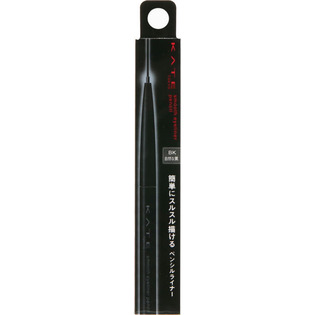
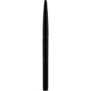

返回列表
产品名称：ケイト スムースアイライナーペンシル

カネボウ化粧品 ケイト スムースアイライナーペンシル ＢＫ
メーカー カネボウ化粧品
JANコード 4973167249109
商品の特徴
自然な発色 スルッと描ける ペンシルライナー
- 成分・分量
- 【成分】
酸化鉄、ミネラルオイル、ミツロウ、ワセリン、トリ（カプリル酸／カプリン酸）グリセリル、カルナウバロウ、マイカ、コンジョウ、タルク、ホホバ種子油、ジステアルジモニウムヘクトライト、ポリエチレン、炭酸プロピレン、ステアリン酸ソルビタン、レシチン、シメチコン、酸化チタン、ジメチコン
- 用法及び用量
- 【使用方法】
●芯は２ｍｍくらい出してお使いください。出しすぎると折れることがあります。
●使いはじめは、手の甲などでならして、描きやすいように芯先をととのえてからのご使用をおすすめします。